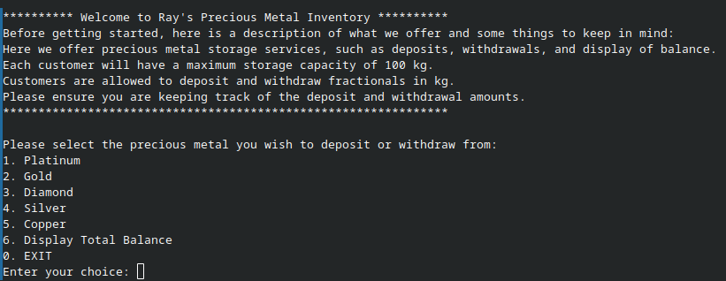
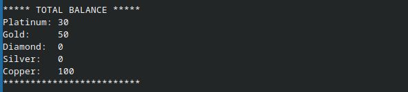

Software · C++
A command-line inventory management system for tracking precious metal holdings, built in C++ with object-oriented design, input validation, and a clean two-level menu interface. A Qt-based GUI is currently in development.
This program lets a user manage a personal inventory of five precious metals — Platinum, Gold, Diamond, Silver, and Copper — through a straightforward CLI. Each metal has a maximum storage capacity of 100 kg, and users can deposit or withdraw fractional amounts at any time. A balance summary screen shows all five holdings at a glance.
I built this project as I was getting back into C++ after a break. The goal was to practice clean code organization across multiple files, struct-based data modeling, and robust input validation — things that are easy to skip in small programs but matter a lot when codebases grow.

The project is split across four .cpp files and a single shared
header. Keeping concerns separated — display logic, validation logic, transaction
logic, and the entry point — made each file easy to reason about independently.
All inventory data lives in a single Inventory struct, and the two
menu option sets are modeled as enum types so switch statements
read as named cases rather than magic numbers.
// header.hpp — shared types and constants
inline const int MAX_LIMIT { 100 };
struct Inventory {
float platinum{}, gold{}, diamond{}, silver{}, copper{};
};
enum Metals { EXIT, PLATINUM, GOLD, DIAMOND, SILVER, COPPER, BALANCE };
enum Operation { QUIT, DEPOSIT, WITHDRAW, MAIN_MENU };
Passing the Inventory struct by reference into display and
transaction functions means there is one authoritative copy of the data at all
times — no globals, no duplication.
Two-level menu navigation.
The outer menu selects a metal; the inner menu handles the operation. Choosing
"Main Menu" from the inner loop breaks back to the outer one cleanly, while
"EXIT" terminates the program entirely. Each metal routes to the same
manageInventory() function, passing only the relevant float field
by reference — no duplication across five nearly-identical branches.
// main.cpp — routing each metal to the same handler via reference
switch (metalChoice) {
case PLATINUM: manageInventory(storage.platinum); break;
case GOLD: manageInventory(storage.gold); break;
case DIAMOND: manageInventory(storage.diamond); break;
case SILVER: manageInventory(storage.silver); break;
case COPPER: manageInventory(storage.copper); break;
case BALANCE: displayTotalBalance(storage); break;
case EXIT:
cout << "\nThank you for using our services!\n";
return 0;
}
Input validation on every read.
Every cin call is guarded: if the stream enters a fail state (e.g.
the user types a letter where a number is expected), the error is cleared and the
bad input is discarded before prompting again. Numeric range is validated
separately in validate.cpp.
// perform_transaction.cpp — stream-fail guard pattern
cin >> depoAmt;
if (cin.fail()) {
cin.clear();
cin.ignore(1000, '\n');
cout << "\nInvalid input. Please enter a number.\n";
} else {
if (isValidDeposit(depoAmt, metalChoice)) {
metalChoice += depoAmt;
cout << "\nNew Balance: " << metalChoice << "kg\n";
} else {
cout << "\nInvalid deposit amount\n";
}
}
Separated validation logic.
Deposit and withdrawal rules live in their own functions in
validate.cpp. Both return a boolean and take only the amount and
current balance as arguments, making them independently testable with no
side effects.
// validate.cpp
bool isValidDeposit(float depoAmt, float currentBalance) {
return (depoAmt > 0) && ((depoAmt + currentBalance) <= MAX_LIMIT);
}
bool isValidWithdrawal(float withdrawAmt, float currentBalance) {
return (withdrawAmt > 0) && (withdrawAmt <= currentBalance);
}
Sample Balance:

The project ships with both a Makefile and a shell script so it can
be compiled and run in a single command either way.
# Using Make make make clean # clean up compiled artifacts when done # Using the shell script (chmod first if needed) ./run.sh
The biggest takeaway was how much clarity you get from splitting a program into
focused files early — even in a small project. Having validate.cpp
contain nothing but two pure functions made it trivial to audit and reason about
the correctness of the deposit and withdrawal logic in isolation.
I also reinforced the pattern of guarding every cin read with a
fail-state check. It is easy to skip when prototyping, but user input is
unpredictable and a single unguarded read can put the stream into a broken state
that silently corrupts subsequent reads.
If I were to extend this, I would add file persistence so balances survive
between sessions, and replace the raw float fields with a map from
a metal enum to balance — making it straightforward to add new metals without
touching the struct definition or the switch statement.